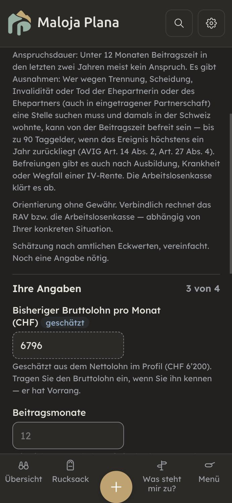

Durchgang 10.11.2026 auf main ad40cd22. Neun Seiten: Kapitelseite mit Lohn-Barometer, Lebenslauf, Neue Stelle, Lehre beginnen, Selbständig werden, Stelle verloren, Ausgesteuert, Stundenlohn, ALV-Rechner. Im Browser auf einem eigenen Server mit diesem Stand gemessen (375 px, Beispiel «Maria Muster»; Lehre aus Kapitel 4: nicht auf fremdem Server). Fachprüfung in zwei Teilen mit Netz (Fedlex-Volltexte OR, FamZG, BBG, BBV, MWSTG, AVIG, AVIV, UVG, UVV, KVG, BVG, ÜLG; AHV-Merkblatt 2.02), Rechner mit Node nachgerechnet, Textprüfung über 300 Texte. Kernstelle L1 von Hand im Code bestätigt (alvRechner.js:87). Gebaut ist nichts.
Gut: ALV-Taggeld, Höchstverdienst, Wartetage und Anspruchsdauer rechnen nach Gesetz; RAV-Frist «spätestens am ersten Tag» stimmt; die Lehre-Seite stimmt am Volltext (Probezeit, Genehmigung ohne Gebühren, Ausbildungszulage 268 Fr.); Stundenlohn-Zuschläge 8,33 / 10,64 / 13,04 % und die vorsichtige Mindestlohn-Prüfung stimmen. Ab 1.1.2027 zeigt die Lohn-Prüfung bewusst «Werte nicht belegt», bis die neuen Mindestlöhne eingetragen sind.
| # | Seite | Befund | Empfehlung |
|---|---|---|---|
| L1 | ALV-Rechner | Ohne Geburtsdatum im Profil rechnet der Rechner mit 400 Taggeldern. Unter 25 ohne Kinder sind es 200, ab 55 mit 22 Beitragsmonaten 520 (AVIG Art. 27 Abs. 5bis). Wer jung ist, plant mit doppelt so viel Zeit. Die Anzeige sagt nur «Noch eine Angabe nötig», nicht welche. | Feld «Alter» im Rechner; ohne Alter keine Anspruchsdauer, sondern «200 bis 520 Taggelder, je nach Alter». |
| L2 | ALV-Rechner | Der Betrag steht gross da, auch bei weniger als 12 oder gar keinen Beitragsmonaten. Für Befreite gilt ein Pauschalansatz, nicht der Lohn (AVIG Art. 13, Art. 23 Abs. 2). | Unter 12 Monaten kein Betrag, sondern der Weg zur Befreiung. |
| L3 | ALV-Rechner | «Geschätzt pro Monat» ist brutto; AHV/IV/EO, Nichtberufsunfall und der BVG-Risikobeitrag gehen noch ab (AVIG Art. 22a). | «brutto, vor Abzügen» ins Label. |
| L4 | ALV-Rechner | «Kinder» wird aus allen Haushaltskindern unter 25 vorbefüllt. Volljährige zählen nur in Ausbildung (ZGB Art. 277). Ein arbeitendes 22-jähriges Kind hebt 70 % auf 80 % (bei 6 000: 4 200 → 4 800). | Kinder über 18 nicht vorbefüllen, Hinweis «ab 18 nur in Ausbildung». |
| L5 | Stelle verloren | «… kann das RAV Einstelltage verhängen»: Das Gesetz sagt «ist einzustellen», bei Verschulden verfügt die Kasse. Es fehlt: Selbst kündigen ohne neue Stelle gibt 31–60 Tage, und Einstelltage gehen von den Taggeldern ab (AVIG Art. 30, AVIV Art. 45). | Text an diese Artikel anpassen. |
| L6 | Stelle verloren | «Schon während der Kündigungsfrist sollten Sie sich bewerben»: Die Folge fehlt, fehlende Bemühungen sind ein Einstellgrund (AVIG Art. 17 Abs. 1, Art. 30 Abs. 1 Bst. c). | «sonst drohen Einstelltage». |
| L7 | Stelle verloren | Abredeversicherung ohne Frist: Sie muss vor dem Ende der Unfalldeckung abgeschlossen sein (UVV Art. 8). | «bis spätestens {Datum}» — das Datum rechnet die Seite schon. |
| A1 | Selbständig werden | «Steuern & MwSt zurücklegen»: Die AHV-Akontobeiträge fehlen (bis 10 % des Einkommens, Mindestbeitrag 530 Fr., vierteljährlich, Verzugszins 5 %; Merkblatt 2.02, Stand 2026). Wer nur danach plant, legt zu wenig zurück. | Ein Satz mit diesen Werten, Werte in die Jahrestabelle. |
| A2 | Neue Stelle | Probezeit-Ende ohne Verlängerung: Bei Krankheit und Unfall verlängert sie sich, die Kündigungsfrist darin ist 7 Tage (OR Art. 335b Abs. 1, 3). Wer krank war, hält sich zu früh für geschützt. | Hinweis und Erinnerung ergänzen. |
| K | verschiedene | Kleiner: Mindestlohn nach Wohn- statt Arbeitskanton auch auf dieser Kapitelseite (mit #802 erledigt, nur der Hinweis «angenommen» fehlt hier) · Probezeit-Ende bei Antritt am Monatsende einen Tag früh (31.01. → 27.02.) · «ab 8 Std. unfallversichert» meint nur Freizeit · grosse Säule 3a für Selbständige ohne Kasse · «nicht mehr an der Quelle besteuert» (Schweizer hatten nie Quellensteuer), MWST zählt In- und Ausland · ein Auftraggeber = meist unselbständig · Lebenslauf druckt Geburtsdatum, Nationalität, Zivilstand immer (freiwillig, abwählbar machen) · «Vier Wege», es sind drei · Mindestlohn-Ausnahmen nur für GE/TI/JU belegt · ALV-Randfälle bei 10 416 und 3 797.50 · Lohnbasis 12 Monate, 13. Monatslohn · Zwischenverdienst, 3a nach Aussteuerung, Sperrfrist verschiebt das RAV-Datum · Quellensteuer-Rückforderung genauer · AHV nach Aussteuerung je Kalenderjahr. | Ergänzen oder belegen. |

| # | Befund | Empfehlung |
|---|---|---|
| S1 | Rätoromanisch: vier Abläufe fast ganz deutsch (Neue Stelle, Lehre, Stelle verloren, Ausgesteuert, rund 105 Texte), zwei Fusszeilen halb rm, halb de; eine rm-Fassung nur in du. | Halbe Sätze und die Sie-Fassung korrigieren; die Übersetzung braucht eine Person, die Romanisch schreibt. |
| S2 | Generisches Maskulin: «Arbeitgeber» 15×, «Lehrlingslohn», it «datore di lavoro», fr «Devenir indépendant». Drei Schreibweisen (Doppelpunkt, Doppelform, Schrägstrich). | Doppelform bzw. «Lernendenlohn», «Selbständig werden» (fr «Se mettre à son compte»); eine Schreibweise. |
| S3 | Gesetzesangaben mitten im Satz: rund 160 Verweise in 43 Texten, oft mit Abs./Bst. in jedem Satz. | Wie Kapitel 1–4: ans Satzende, höchstens einer je Satz. |
| S4 | Kürzel unerklärt: RAV 19×, ALV, WBF, MwSt; en lässt alle deutschen Kürzel stehen. | Beim ersten Vorkommen ausschreiben. |
| S5 | Beschwichtigen: «kein Ende der Unterstützung», «stehen Sie nicht ohne Unterstützung da», «bringt Freiheit», «ruhige Überblick» in 5 Intros. | Streichen, die Tatsache nennen. |
| S6 | Mehrere Namen: «Neuer Job» / «Neue Stelle»; Taggeld / Arbeitslosentaggeld / Arbeitslosenentschädigung; Arbeitslosenkasse / ALV; Lehre / Ausbildung / Berufsbildung. | Je ein Name: «Neue Stelle», «Taggeld», «Arbeitslosenkasse», «Lehre». |
| S7 | Klein: Anrede kippt in Infinitiv («Sonst den Unfall … einschliessen»); Typo «Deine» in der du-Fassung; «Was steht mir im Stundenlohn zu?» als einziger Ich-Titel; Absätze bis 1 600 Zeichen (Ausgesteuert); fr/it holprig (z. B. «Votre employeur vous annonce»), en «Mandatory school». | Anrede durchhalten, Typo, Absätze teilen; Ich-Titel bleibt (Frage der Person). |
main. L1 zuerst, mit rotem Test (Alter fehlt → keine 400). A und C gehen mit; C ändert den gemeinsamen Rechner-Baustein und wirkt in allen Rechnern. Jeder neue Fachsatz vor «fertig» durch den rechts-pruefer am Volltext. Der Stundenlohn bleibt wegen #802 unangetastet. Rätoromanisch: nur die halben Sätze und die fehlende Sie-Fassung.